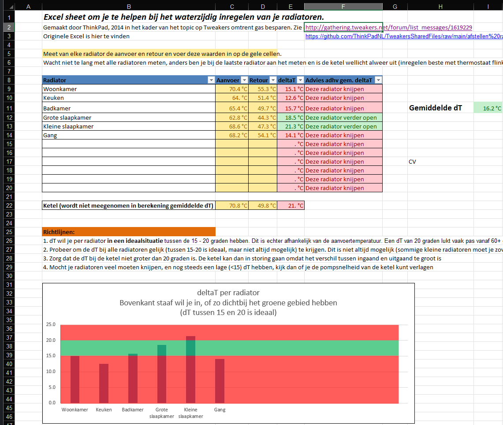

Dit tabblad kan je helpen bij het waterzijdig inregelen van een verwarmingsinstallatie.
Door alle in- en uitgaande temperaturen van iedere radiator in onderstaande tabel te stoppen, geeft het programma aan wat je met iedere radiator moet doen.
Onderaan wordt ook nog eens grafisch weergegeven hoe groot de verschillen zijn.
Lees ook de nuttige tips in het midden.

Originele Excel:
https://github.com/ThinkPadNL/TweakersSharedFiles/raw/main/afstellen%20radiatoren.xlsx
Tweakers artikel van de auteur:
https://gathering.tweakers.net/forum/list_messages/1619229